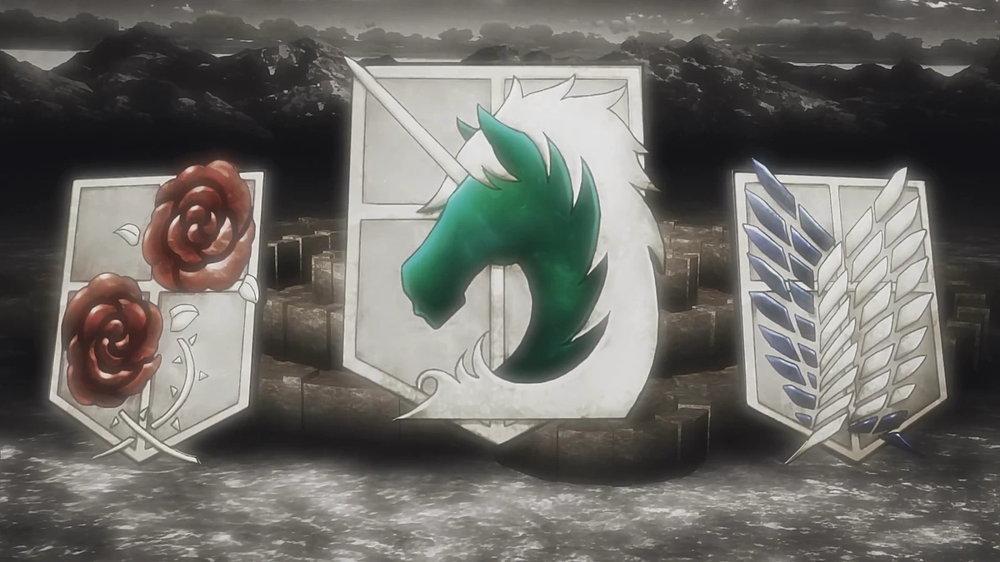

Welcome, recruit! This is an interactive story game based on the manga Attack on Titan created by Hajime Isayama. Read each page carefully to follow the story, and click on the choices at the bottom of each page to determine your fate. The video below provides a deeper look into the background and inspiration for this game.
| Regiment | Description | Join |
|---|---|---|
| Scouts | Explore beyond the walls and face the Titans head on | Join the Scout Regiment |
| Requires intense ODM gear training and courage | ||
| Military Police | Maintain order and protect the inner walls and citizens | Join the Military Police |
| Garrison | Defend the walls and safeguard humanity’s last strongholds | Join the Garrison Regiment |
| Tip: Choose your regiment wisely, each path has unique challenges and rewards! | ||